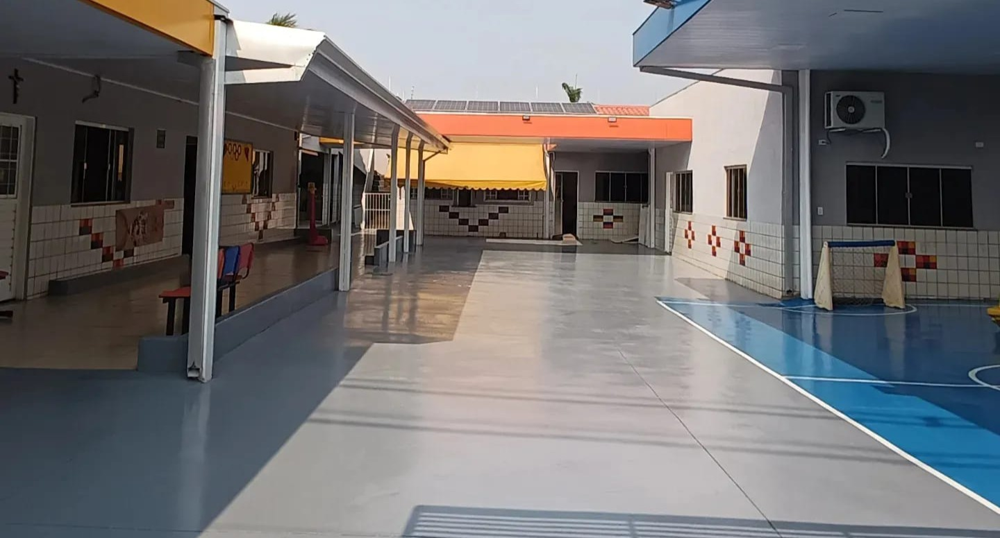
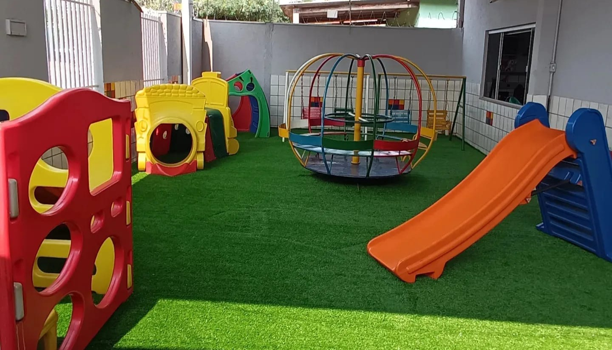
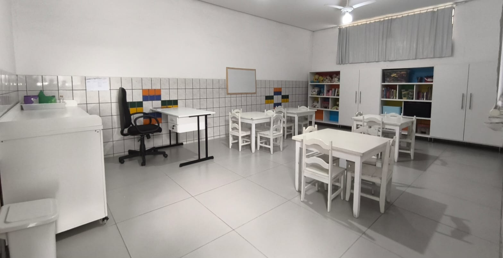

Um pouco de nossa história.
Somos uma Instituição não governamental, sem fins lucrativos, fundada há mais de 40 anos, com o objetivo de atender a uma grande demanda de famílias que necessitam de creche, priorizando o compromisso de garantir à criança o direito à educação infantil, à alimentação, ao brinquedo e a diversidade cultural. Hoje temos uma estrutura física pedagógica adequadas ao compromisso de realizar com seriedade e amor o nosso trabalho, em razão de muita luta e perseverança em todos esses anos.
Parquinho
Nossa creche conta com um parquinho com brinquedos fixos, planejado para garantir diversão, segurança e estímulo ao desenvolvimento motor, além de uma quadra que possibilita atividades físicas e recreativas.
Dispomos de salas de brinquedos organizadas e acolhedoras, onde as crianças aprendem brincando, explorando a criatividade, a imaginação e a convivência com os colegas.

Trabalhamos com um projeto pedagógico de qualidade, respeitando cada fase da infância e promovendo experiências que contribuem para o crescimento cognitivo, social e emocional.
Salas
Nossas salas de aula são amplas, arejadas e totalmente climatizadas. Contam com armários planejados, mesas e cadeiras novas, além de materiais pedagógicos de qualidade, que promovem um aprendizado lúdico, completo e significativo.
